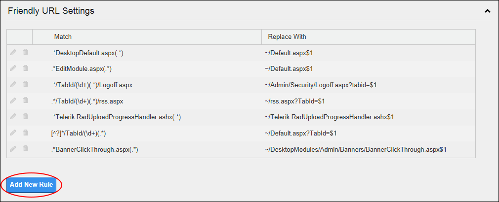

Adding a New Friendly URL Rule
How to add a new friendly URL rule to DNN using the Host Settings module.
- Navigate to Host >
 Host Settings.
Host Settings.
- Select the Advanced Settings tab.
- Expand the Friendly URL Settings section.
- Click the Add New Rule button. This will display a new blank row below any existing Friendly URL rules where you can enter the details for the new rule.

- In the Match text box, enter the URL to be matched.
- In the Replace With text box, enter the replacement information.

- Click the Update Rule
 button. The newly added rule is now displayed at the end of this list.
button. The newly added rule is now displayed at the end of this list.